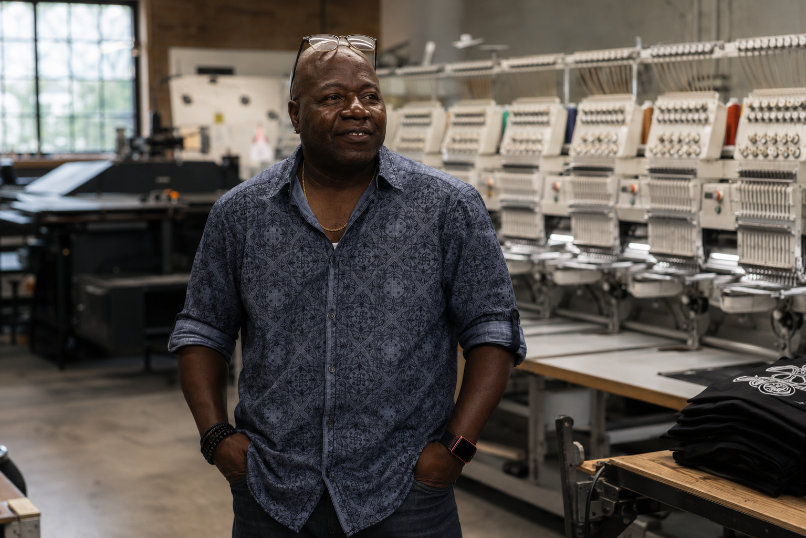
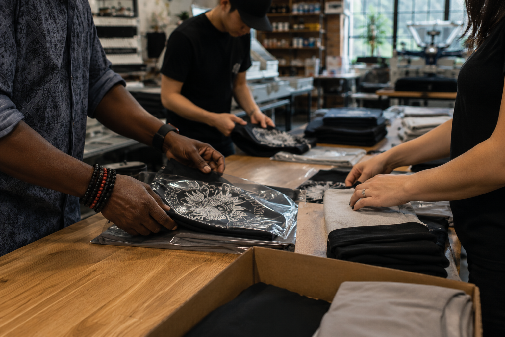
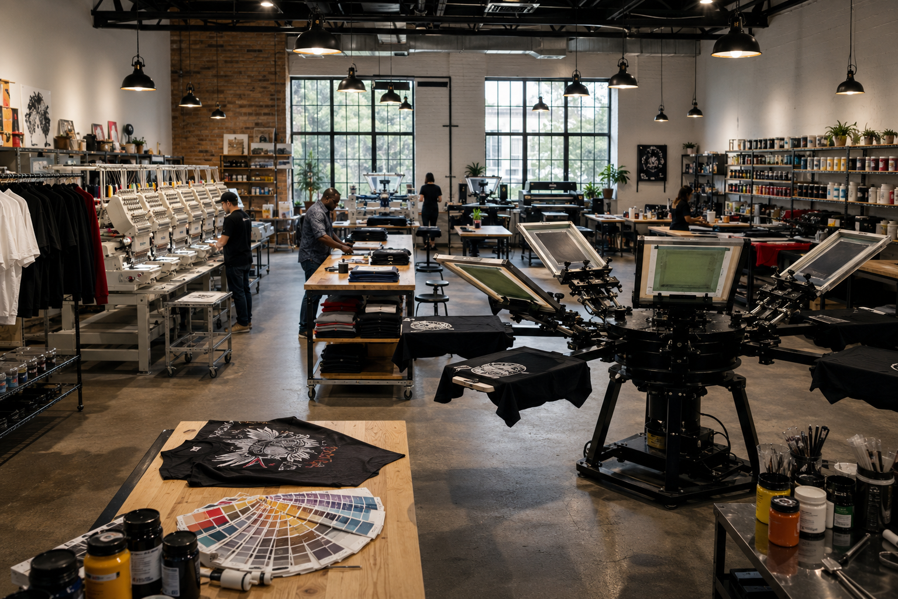

MA2K / 05
BUILT LOCALLY
05


New Bedford / MassachusettsA shop
A shop
people can
talk to.
1 Wamsutta Street, Suite 15
New Bedford, MA 02740
Family owned + operated
Close enough to listen. Capable enough to deliver.
MA2K supports local businesses, schools, organizations, events, teams and independent creators with practical guidance and flexible production.
- HoursMonday–Saturday, 10 AM–6 PM
- Phone508-958-9587
- Emailma2kimpression@gmail.com
- Primary serviceScreen printing

